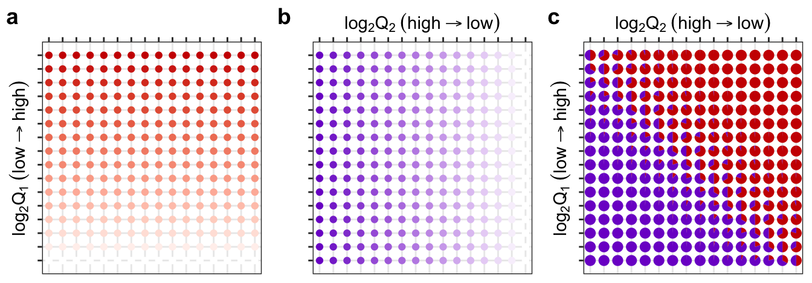
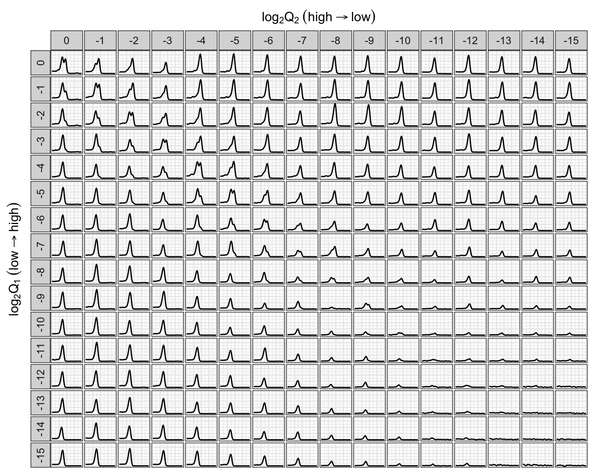
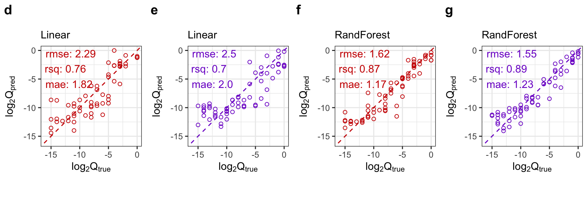

# load required packages
library(tidyverse)
library(tidymodels)
library(mcmodel)
library(cowplot)
# default theme
theme_set(theme_bw() +
theme(legend.key.size = unit(0.4,'cm'),
legend.key.height = unit(.4, 'cm')))
# global setting
strain_label = c("label_E", "label_P")
strain_name = c("EC","PP")
strain_color = c("red3", "purple3")
# well position
ec_single_well = paste0(rep(LETTERS[1:16], times = 3), rep(1:3, each = 16))
pp_single_well = paste0(rep(LETTERS[1:16], times = 3), rep(4:6, each = 16))
gradient_matrix_well = paste0(rep(LETTERS[1:16],times = 16), rep(7:22,each = 16))
strain_single_well = list(EC = ec_single_well, PP = pp_single_well)
# set seed
set.seed(0)4 Dual-species Modelling
We use Random Forest to model dual-species melting curve data.
4.1 Global setting
Here we load packages and define several frequently used variables.
4.2 Two-species design
The plate setting used in melting curve analysis is provided in a csv file. Original value for each column is the times of two-fold dilution, and we transform them into DNA quantity as related to the original concentration (assumed to be 1). Note: a label value of 16 means not contain this species.
# read plate setting
plate_file = xfun::magic_path("modeling-plate-labels.csv")
plate = read.csv(plate_file)
plate2 = plate |>
drop_na() |>
mutate(label_E = ifelse(label_E == 0, 1, ifelse(label_E == 16, 0, 1/2^label_E)),
label_P = ifelse(label_P == 0, 1, ifelse(label_P == 16, 0, 1/2^label_P)))Layout of gradient dilution matrix Figure 4.1.
p_concentration = lapply(seq_along(strain_label), function(i){
plot_384_single_concentration(plate2, strain_label[[i]], well_size = 1.5) +
scale_color_gradient(high = strain_color[[i]],
low = "white",
trans = "log2",
na.value = "grey90") +
coord_equal(xlim = c(6.5,22.5)) +
theme(legend.position = 'none',
axis.text = element_blank())
})
p_concentration[[1]] = p_concentration[[1]] +
labs(x = " ", y = expression(log[2]*Q[1]~(low %->% high)))
p_concentration[[2]] = p_concentration[[2]] +
labs(x = expression(log[2]*Q[2]~(high %->% low)), y = " ")
plate3 = plate2 |>
dplyr::filter(well_position %in% gradient_matrix_well)
p_matrix = plot_384_community_structure(plate3) +
scale_fill_manual(values = c("red3","purple3")) +
coord_equal(xlim = c(6.5,22.5)) +
theme(legend.position = 'none',
axis.text = element_blank()) +
labs(x = expression(log[2]*Q[2]~(high %->% low)),
y = expression(log[2]*Q[1]~(low %->% high)))
plot_grid(p_concentration[[1]],
p_concentration[[2]],
p_matrix,
align = 'hv',
ncol = 3,
labels = "auto")Warning in scale_color_gradient(high = strain_color[[i]], low = "white", : log-2 transformation introduced infinite values.
log-2 transformation introduced infinite values.ggsave(filename = "figures/figure2a.jpg")Saving 7 x 2.45 in image

Melting curves of gradient dilution matrix Figure 4.2.
# read qPCR run results
raw_file = xfun::magic_path("cycle30-experiment1.txt")
quantstudio_raw = read_quantstudio(raw_file)
mc = quantstudio2mc(quantstudio_raw, plate = plate2, primer = "V4")
mc = filterData(mc, from = 80, to = 90) |>
transformData(step = 0.1)4.3 Gradient Dilution Matrix
mc_df = mc2tbl(mc)
mc_df_matrix = mc_df |>
dplyr::filter(well_position %in% gradient_matrix_well) |>
dplyr::mutate_at(c('label_E','label_P'),
function(x) log2(x) |> as_factor() |> fct_rev())
ggplot(mc_df_matrix, aes(temperature, derivative, group = well_position)) +
geom_line() +
scale_x_continuous(position = 'top') +
facet_grid(label_E ~ label_P, switch = 'y') +
labs(x = expression(log[2]*Q[2]~(high %->% low)),
y = expression(log[2]*Q[1]~(low %->% high))) +
theme(legend.position = "none",
panel.spacing = unit(1, "pt"),
axis.ticks = element_blank(),
axis.text = element_blank(),)
ggsave("figures/figure2c.jpg")Saving 7 x 5.6 in image

4.4 Random Forest Modelling
# data
mc_ml_data = read.csv("data-clean/20230512.csv") |>
dplyr::filter(well_position %in% gradient_matrix_well,
cycle == 30, rep == 2) |>
mutate(label_E = log2(label_E), label_P = log2(label_P))
data = initial_split(mc_ml_data)
data_train = training(data)
data_test = testing(data)lm_spec = linear_reg(engine = "lm")
rf_spec = rand_forest(mode = "regression", trees = 1000) |>
set_engine("ranger", importance = 'impurity', num.threads = 10)
plot_model_metric = function(predictions, model_metrics, truth_label, color){
annotation = paste(model_metrics[['.metric']],
format(round(model_metrics[['.estimate']], 2), digits = 2),
sep = ": ",
collapse = "\n")
ggplot(predictions, aes(.data[[truth_label]], `.pred`, color = I(color))) +
geom_point(shape = 21) +
geom_abline(slope = 1, linetype = 'dashed', color = color) +
annotate("text", x = -Inf, y = Inf, color = I(color), label = annotation,
hjust = -0.1, vjust = 1.1) +
coord_equal() +
xlim(c(-16,0)) + ylim(c(-16, 0)) +
labs(x = expression(log[2]*Q[true]), y = expression(log[2]*Q[pred]))
}p_lm_predict = lapply(seq_along(strain_label), function(i){
train = data_train |> select(matches(strain_label[[i]]), starts_with("T"))
test = data_test |> select(matches(strain_label[[i]]), starts_with("T"))
recipe = recipe(as.formula(paste(strain_label[[i]], '.', sep = '~')),
data = train)
fit = workflow() |>
add_recipe(recipe) |>
add_model(lm_spec) |>
fit(train)
prediction = augment(fit, new_data = test)
metric = prediction |>
metrics(truth = strain_label[[i]], estimate = .pred)
plot_model_metric(prediction, metric, strain_label[[i]], strain_color[[i]]) +
labs(subtitle = 'Linear')
})Warning in predict.lm(object = object$fit, newdata = new_data, type =
"response", : prediction from rank-deficient fit; consider predict(.,
rankdeficient="NA")
Warning in predict.lm(object = object$fit, newdata = new_data, type =
"response", : prediction from rank-deficient fit; consider predict(.,
rankdeficient="NA")p_rf_predict = lapply(seq_along(strain_label), function(i){
train = data_train |> select(matches(strain_label[[i]]), starts_with("T"))
test = data_test |> select(matches(strain_label[[i]]), starts_with("T"))
recipe = recipe(as.formula(paste(strain_label[[i]], '.', sep = '~')),
data = train)
fit = workflow() |>
add_recipe(recipe) |>
add_model(rf_spec) |>
fit(train)
prediction = augment(fit, new_data = test)
metric = prediction |>
metrics(truth = strain_label[[i]], estimate = .pred)
plot_model_metric(prediction, metric, strain_label[[i]], strain_color[[i]]) +
labs(subtitle = 'RandForest')
})
plot_grid(plotlist = c(p_lm_predict, p_rf_predict), ncol = 4, labels = letters[4:7])Warning: Removed 6 rows containing missing values or values outside the scale range
(`geom_point()`).Warning: Removed 3 rows containing missing values or values outside the scale range
(`geom_point()`).
ggsave(filename = "figures/figure3d.jpg")Saving 8.5 x 2.97 in image